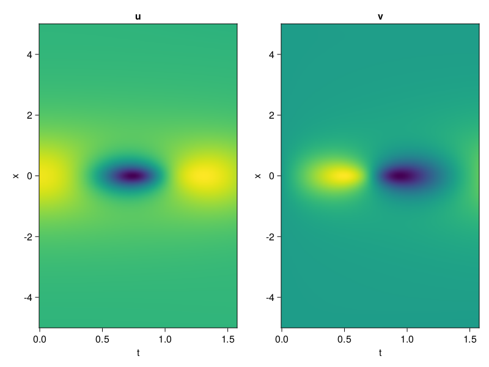
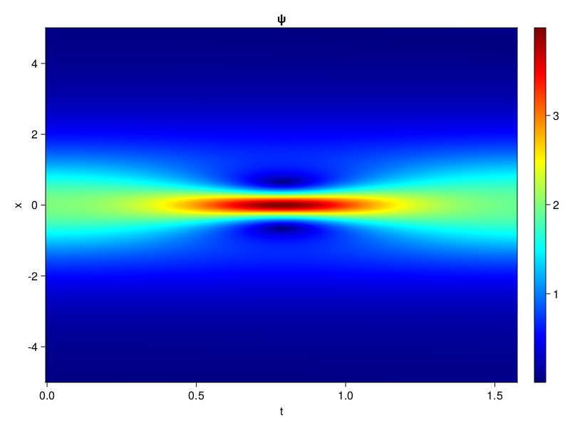
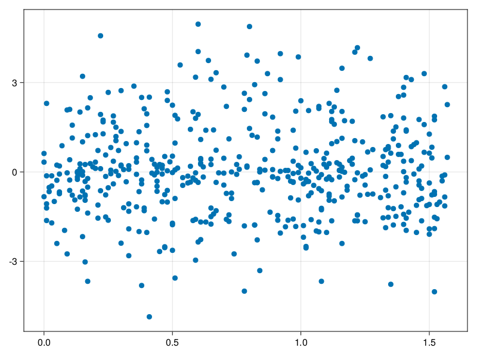

Schrödinger equation
The nonlinear Shrödinger equation is given by
\[\mathrm{i} \partial_t \psi=-\frac{1}{2} \sigma \partial_{x x} \psi-\beta|\psi|^2 \psi\]
Let $\sigma=\beta=1, \psi=u+v i$, the equation can be transformed into a system of partial differential equations
using ModelingToolkit, IntervalSets, Sophon, CairoMakie
using Optimization, OptimizationOptimJL
@parameters x,t
@variables u(..), v(..)
Dₜ = Differential(t)
Dₓ² = Differential(x)^2
eqs=[Dₜ(u(x,t)) ~ -Dₓ²(v(x,t))/2 - (abs2(v(x,t)) + abs2(u(x,t))) * v(x,t),
Dₜ(v(x,t)) ~ Dₓ²(u(x,t))/2 + (abs2(v(x,t)) + abs2(u(x,t))) * u(x,t)]
bcs = [u(x, 0.0) ~ 2sech(x),
v(x, 0.0) ~ 0.0,
u(-5.0, t) ~ u(5.0, t),
v(-5.0, t) ~ v(5.0, t)]
domains = [x ∈ Interval(-5.0, 5.0),
t ∈ Interval(0.0, π/2)]
@named pde_system = PDESystem(eqs, bcs, domains, [x,t], [u(x,t),v(x,t)])\[ \begin{align} \frac{\mathrm{d}}{\mathrm{d}t} u\left( x, t \right) =& - \frac{1}{2} \frac{\mathrm{d}^{2}}{\mathrm{d}x^{2}} v\left( x, t \right) - \left( \left|u\left( x, t \right)\right|^{2} + \left|v\left( x, t \right)\right|^{2} \right) v\left( x, t \right) \\ \frac{\mathrm{d}}{\mathrm{d}t} v\left( x, t \right) =& \frac{1}{2} \frac{\mathrm{d}^{2}}{\mathrm{d}x^{2}} u\left( x, t \right) + \left( \left|u\left( x, t \right)\right|^{2} + \left|v\left( x, t \right)\right|^{2} \right) u\left( x, t \right) \end{align} \]
pinn = PINN(u = Siren(2,1; hidden_dims=16,num_layers=4, omega = 1.0),
v = Siren(2,1; hidden_dims=16,num_layers=4, omega = 1.0))
sampler = QuasiRandomSampler(500, (200,200,20,20))
strategy = NonAdaptiveTraining(1,(10,10,1,1))
prob = Sophon.discretize(pde_system, pinn, sampler, strategy)OptimizationProblem. In-place: true
u0: ComponentVector{Float64}(u = (layer_1 = (weight = [0.29119688272476196 0.3883132338523865; 0.4406743049621582 0.15896356105804443; … ; 0.06826543807983398 0.14683783054351807; -0.48545122146606445 0.038752734661102295], bias = [0.0; 0.0; … ; 0.0; 0.0;;]), layer_2 = (weight = [-0.3356822729110718 -0.34929099678993225 … -0.33632194995880127 0.5992404818534851; -0.5164774656295776 -0.434867799282074 … -0.1648273468017578 0.290188729763031; … ; 0.06785526126623154 -0.5128440856933594 … -0.2004995346069336 -0.5300682783126831; -0.11467301845550537 -0.10512828081846237 … -0.5425267815589905 -0.26841700077056885], bias = [0.0; 0.0; … ; 0.0; 0.0;;]), layer_3 = (weight = [-0.24674248695373535 -0.4538162350654602 … 0.27279388904571533 -0.0136494105681777; 0.035460200160741806 -0.603636622428894 … -0.4316651225090027 -0.20627497136592865; … ; -0.21224355697631836 -0.45502790808677673 … -0.22839155793190002 -0.3017593026161194; -0.13445520401000977 0.2358204573392868 … 0.1291002482175827 0.2812643349170685], bias = [0.0; 0.0; … ; 0.0; 0.0;;]), layer_4 = (weight = [-0.5071748495101929 -0.2192339450120926 … 0.03269341215491295 -0.17712952196598053; -0.18298357725143433 0.23078195750713348 … 0.5258703827857971 0.10723566263914108; … ; -0.07803225517272949 -0.018600814044475555 … 0.5410755276679993 0.33982598781585693; 0.1957530528306961 -0.1181076169013977 … 0.2921886444091797 -0.2908192276954651], bias = [0.0; 0.0; … ; 0.0; 0.0;;]), layer_5 = (weight = [0.4488082528114319 0.22796742618083954 … -0.139577716588974 -0.5980976223945618], bias = [0.0;;])), v = (layer_1 = (weight = [-0.030621707439422607 -0.1139867901802063; 0.28714728355407715 0.0894005298614502; … ; -0.08481574058532715 0.21345841884613037; 0.10215163230895996 -0.1414811611175537], bias = [0.0; 0.0; … ; 0.0; 0.0;;]), layer_2 = (weight = [0.5990620851516724 -0.5467850565910339 … -0.35881370306015015 0.4089168608188629; 0.05277416110038757 -0.28678756952285767 … 0.07613781839609146 -0.48284435272216797; … ; -0.38130486011505127 -0.30254295468330383 … 0.36638692021369934 -0.2760245203971863; 0.0536222830414772 0.30628758668899536 … -0.46868133544921875 -0.41074830293655396], bias = [0.0; 0.0; … ; 0.0; 0.0;;]), layer_3 = (weight = [0.31024670600891113 -0.2841036319732666 … 0.5826898217201233 -0.25793805718421936; -0.4509235918521881 0.14953899383544922 … -0.007989318110048771 -0.40853819251060486; … ; 0.26444458961486816 -0.4824843406677246 … -0.3679729402065277 0.5808896422386169; 0.5186893343925476 0.3589330017566681 … -0.4479213058948517 0.45781680941581726], bias = [0.0; 0.0; … ; 0.0; 0.0;;]), layer_4 = (weight = [0.2087399810552597 0.5626757144927979 … 0.5428351163864136 0.5301612019538879; -0.17838966846466064 0.2566864788532257 … 0.393920361995697 -0.5850794911384583; … ; -0.39953336119651794 0.34786683320999146 … 0.2073269784450531 -0.0718400627374649; 0.45184800028800964 -0.42166033387184143 … 0.12126956135034561 -0.04753732681274414], bias = [0.0; 0.0; … ; 0.0; 0.0;;]), layer_5 = (weight = [0.4900197386741638 0.04895543307065964 … 0.4622126817703247 0.07047130167484283], bias = [0.0;;])))Now we train the neural nets and resample data while training.
function train(pde_system, prob, sampler, strategy, resample_period = 500, n=10)
bfgs = BFGS()
res = Optimization.solve(prob, bfgs; maxiters=2000)
for i in 1:n
data = Sophon.sample(pde_system, sampler)
prob = remake(prob; u0=res.u, p=data)
res = Optimization.solve(prob, bfgs; maxiters=resample_period)
end
return res
end
res = train(pde_system, prob, sampler, strategy)u: ComponentVector{Float64}(u = (layer_1 = (weight = [0.49779638437518786 -0.33221198533932733; 1.4417800226072532 -0.23391000044332333; … ; 0.3192092543887319 0.5115283733005137; -0.4976313151271843 0.2194304246353148], bias = [-0.16077794881478447; 0.11427249309148176; … ; -0.3899310761123717; 0.043078169921736194;;]), layer_2 = (weight = [-0.35166008140690364 -0.2688282095928256 … -0.2084414986481826 0.4339706367120684; -0.5155814186259688 -0.11964375315635722 … -0.058135348370487776 0.5118800817901551; … ; 0.01674528465077279 0.18491644596798135 … -0.21399118608451623 -0.4403880076779017; 0.45081157863363147 0.45907594563502674 … -0.9437659782691677 -0.42869188360134813], bias = [-0.00687596929921322; 0.15844417768380253; … ; -0.2498804808335335; 0.26105336978563404;;]), layer_3 = (weight = [-0.660607325588281 -0.5766572428459538 … 0.402465623463543 0.26880327049018443; 0.13535527988039076 -0.36417776556469567 … -0.4816947528292455 -0.29570710861970306; … ; -0.12632946729468078 -0.36042910567257663 … 0.2007197249348607 -0.29046061734890544; -0.41421658097940817 0.3447273318770086 … 0.1268301815388502 0.7271769675473931], bias = [-0.020532288363686823; -0.2511905658397502; … ; 0.15256712613579318; 0.2575846931405248;;]), layer_4 = (weight = [-0.7369723082736982 -0.08155900917388666 … -0.561365926711624 -0.5344323126094497; -0.09414798162533349 0.020916178480155197 … 0.6621264136387891 0.036136022846297154; … ; -0.14246323552613477 -0.16124878337931503 … 0.64159521128445 0.46203350884708566; -0.2462644886857299 -0.5157785222636682 … 0.12568180305154053 -0.28804514870485776], bias = [0.2988698753602782; 0.11169516397037875; … ; -0.10094154159929046; 0.4434348812989996;;]), layer_5 = (weight = [0.5180056592931018 0.05086810813351941 … -0.09988175794399971 -0.832775624422482], bias = [0.07876765307788991;;])), v = (layer_1 = (weight = [-0.2209595891526386 -0.2127793506306644; 0.41646423683155165 -0.049776899029593646; … ; -0.3900357167460954 0.5650679064296767; 0.192810719759499 -0.16550641170932193], bias = [0.08822627540396372; 0.26932210650481764; … ; 0.07726601737084256; 0.01689602238390704;;]), layer_2 = (weight = [0.59982221787291 -0.4895164823693241 … -0.11024028213322021 0.27796552931822854; 0.09328552638529704 -0.49389372704492523 … 0.057671840253310416 -0.5625629909150942; … ; -0.4448957783248467 -0.3671293711031335 … 0.6115026959054324 -0.23902550464411676; -0.013400815448334269 0.2022725959267077 … -0.24375435221750305 -0.4997283702561174], bias = [0.06868473056135567; -0.06193590362285532; … ; 0.05555777387037874; -0.23432201106010483;;]), layer_3 = (weight = [0.7866034266643558 -0.08664091572349719 … 0.12589961834560204 -0.1376289600912153; -0.5485362545949984 0.36367079926424495 … -0.10170486714343517 -0.5727458811796378; … ; 0.11671092565097192 -0.5524943595186392 … -0.2394883410013487 0.6573985163956927; 0.8109174977776532 0.5403706619214441 … -0.6318190473869024 0.7247870243123921], bias = [-0.2998664328060716; 0.5782259337267551; … ; 0.2404614104362035; -0.5180497507602883;;]), layer_4 = (weight = [0.2836395261733164 0.8824973328373177 … 0.46884942774015087 0.3003394096266439; 0.17670355972650822 0.16843074862926166 … 0.28515460781351565 -0.5930052681432535; … ; 0.15949762330042383 0.9857931559175732 … 0.059750026366712304 0.21756056345295471; 0.12231837934347166 -0.1651298289908596 … 0.09002687061310422 -0.2523924831071842], bias = [-0.7525189424487986; 0.08770130120391129; … ; -0.00713999223727504; 0.018615100457696432;;]), layer_5 = (weight = [0.6752878036666751 -0.26078351376416975 … 1.0093835476471833 -0.21143572939498917], bias = [0.04759148718609592;;])))phi = pinn.phi
ps = res.u
xs, ts= [infimum(d.domain):0.01:supremum(d.domain) for d in pde_system.domain]
u = [sum(phi.u(([x,t]), ps.u)) for x in xs, t in ts]
v = [sum(phi.v(([x,t]), ps.v)) for x in xs, t in ts]
ψ = @. sqrt(u^2+ v^2)
axis = (xlabel="t", ylabel="x", title="u")
fig, ax1, hm1 = heatmap(ts, xs, u', axis=axis)
ax2, hm2= heatmap(fig[1, end+1], ts, xs, v', axis= merge(axis, (; title="v")))
display(fig)
axis = (xlabel="t", ylabel="x", title="ψ")
fig, ax1, hm1 = heatmap(ts, xs, ψ', axis=axis, colormap=:jet)
Colorbar(fig[:, end+1], hm1)
display(fig)
Customize Sampling
Bascially any sampling method is supportted. For example we can sample data according to the predicted solution.
using StatsBase
data = vec([[x, t] for x in xs, t in ts])
wv = vec(ψ)
new_data = wsample(data, wv, 500)
new_data = reduce(hcat, new_data)
fig, ax = scatter(new_data[2,:], new_data[1,:])
prob.p[1] = new_data
prob.p[2] = new_data
prob = remake(prob; u0 = res.u)
# res = Optimization.solve(prob, bfgs; maxiters=1000)OptimizationProblem. In-place: true
u0: ComponentVector{Float64}(u = (layer_1 = (weight = [0.49779638437518786 -0.33221198533932733; 1.4417800226072532 -0.23391000044332333; … ; 0.3192092543887319 0.5115283733005137; -0.4976313151271843 0.2194304246353148], bias = [-0.16077794881478447; 0.11427249309148176; … ; -0.3899310761123717; 0.043078169921736194;;]), layer_2 = (weight = [-0.35166008140690364 -0.2688282095928256 … -0.2084414986481826 0.4339706367120684; -0.5155814186259688 -0.11964375315635722 … -0.058135348370487776 0.5118800817901551; … ; 0.01674528465077279 0.18491644596798135 … -0.21399118608451623 -0.4403880076779017; 0.45081157863363147 0.45907594563502674 … -0.9437659782691677 -0.42869188360134813], bias = [-0.00687596929921322; 0.15844417768380253; … ; -0.2498804808335335; 0.26105336978563404;;]), layer_3 = (weight = [-0.660607325588281 -0.5766572428459538 … 0.402465623463543 0.26880327049018443; 0.13535527988039076 -0.36417776556469567 … -0.4816947528292455 -0.29570710861970306; … ; -0.12632946729468078 -0.36042910567257663 … 0.2007197249348607 -0.29046061734890544; -0.41421658097940817 0.3447273318770086 … 0.1268301815388502 0.7271769675473931], bias = [-0.020532288363686823; -0.2511905658397502; … ; 0.15256712613579318; 0.2575846931405248;;]), layer_4 = (weight = [-0.7369723082736982 -0.08155900917388666 … -0.561365926711624 -0.5344323126094497; -0.09414798162533349 0.020916178480155197 … 0.6621264136387891 0.036136022846297154; … ; -0.14246323552613477 -0.16124878337931503 … 0.64159521128445 0.46203350884708566; -0.2462644886857299 -0.5157785222636682 … 0.12568180305154053 -0.28804514870485776], bias = [0.2988698753602782; 0.11169516397037875; … ; -0.10094154159929046; 0.4434348812989996;;]), layer_5 = (weight = [0.5180056592931018 0.05086810813351941 … -0.09988175794399971 -0.832775624422482], bias = [0.07876765307788991;;])), v = (layer_1 = (weight = [-0.2209595891526386 -0.2127793506306644; 0.41646423683155165 -0.049776899029593646; … ; -0.3900357167460954 0.5650679064296767; 0.192810719759499 -0.16550641170932193], bias = [0.08822627540396372; 0.26932210650481764; … ; 0.07726601737084256; 0.01689602238390704;;]), layer_2 = (weight = [0.59982221787291 -0.4895164823693241 … -0.11024028213322021 0.27796552931822854; 0.09328552638529704 -0.49389372704492523 … 0.057671840253310416 -0.5625629909150942; … ; -0.4448957783248467 -0.3671293711031335 … 0.6115026959054324 -0.23902550464411676; -0.013400815448334269 0.2022725959267077 … -0.24375435221750305 -0.4997283702561174], bias = [0.06868473056135567; -0.06193590362285532; … ; 0.05555777387037874; -0.23432201106010483;;]), layer_3 = (weight = [0.7866034266643558 -0.08664091572349719 … 0.12589961834560204 -0.1376289600912153; -0.5485362545949984 0.36367079926424495 … -0.10170486714343517 -0.5727458811796378; … ; 0.11671092565097192 -0.5524943595186392 … -0.2394883410013487 0.6573985163956927; 0.8109174977776532 0.5403706619214441 … -0.6318190473869024 0.7247870243123921], bias = [-0.2998664328060716; 0.5782259337267551; … ; 0.2404614104362035; -0.5180497507602883;;]), layer_4 = (weight = [0.2836395261733164 0.8824973328373177 … 0.46884942774015087 0.3003394096266439; 0.17670355972650822 0.16843074862926166 … 0.28515460781351565 -0.5930052681432535; … ; 0.15949762330042383 0.9857931559175732 … 0.059750026366712304 0.21756056345295471; 0.12231837934347166 -0.1651298289908596 … 0.09002687061310422 -0.2523924831071842], bias = [-0.7525189424487986; 0.08770130120391129; … ; -0.00713999223727504; 0.018615100457696432;;]), layer_5 = (weight = [0.6752878036666751 -0.26078351376416975 … 1.0093835476471833 -0.21143572939498917], bias = [0.04759148718609592;;])))